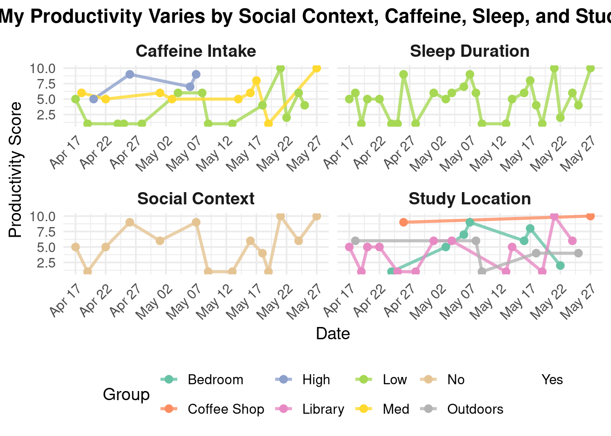

Code
#read in all packages
library(tidyverse)
library(here)
library(gt)
library(janitor)
library(readxl)
library(patchwork)
#read in personal data
data <- read_csv(here("data", "ENVS193DS_personaldata_cleaned.csv"))#read in all packages
library(tidyverse)
library(here)
library(gt)
library(janitor)
library(readxl)
library(patchwork)
#read in personal data
data <- read_csv(here("data", "ENVS193DS_personaldata_cleaned.csv"))Problem 1: Personal Data a. Data summarizing I will summarize my data by calculating the mean productivity score across categories of my grouping variables: hours of sleep the night before a study session, studying with others or not, caffeine, and location of study session. Comparing these groups will inform how each factor affects productivity levels; I expect increased caffeine and studying with others to improve my energy and attention while study locations such as my bedroom or outside to be less productive as there are more distractions.
#visualization: productivity across all variables
# Categorize caffeine and sleep with binning
data <- data %>%
mutate(
caffeine_level = case_when( #create a new variable "caffeine_level" based on caffeine intake in mg
caffeine_mg == 0 ~ "None",
caffeine_mg > 0 & caffeine_mg <= 100 ~ "Low",
caffeine_mg > 100 & caffeine_mg <= 200 ~ "Moderate",
caffeine_mg > 200 ~ "High"
),
#create a new variable 'sleep_level' based on the number of hours of sleep
sleep_level = case_when(
sleep_hrs < 6 ~ "Low",
sleep_hrs >= 6 & sleep_hrs < 8 ~ "Medium",
sleep_hrs >= 8 ~ "High"
)
)
# Pivot for grouped plots
summary_data <- data %>%
#select relevant columns for analysis
select(productivity, with_others, sleep_level, caffeine_level, location) %>%
#convert wide format to long format for grouped plotting
pivot_longer(cols = c(with_others, sleep_level, caffeine_level, location),
names_to = "variable", values_to = "group") %>%
#group by each variable and group level
group_by(variable, group) %>%
#calc the mean productivity for each group, ignoring missing values
summarise(mean_productivity = mean(productivity, na.rm = TRUE), .groups = "drop")
# Bar Plot of mean productivity by with others, sleep, caffeine, and location
ggplot(summary_data, aes(x = group, y = mean_productivity, fill = variable)) + #create bar plot without legend
geom_col(show.legend = FALSE) +
facet_wrap(~ variable, scales = "free_x") + # Create separate panels for each variable
labs(x = "Group", y = "Mean Productivity (1–10)", title = "Average Productivity by Group") + #add title and axis labels
scale_fill_brewer(palette = "Set2") + #add color palette
theme_minimal() #use minimal themeFigure 1. Mean productivity scores (1–10) by social context, sleep level, caffeine intake, and study location. Each panel displays how productivity varies with respect to one grouping factor, helping visualize which environments or habits are linked with higher productivity.
library(gt)
#create productivity summary table using gt
summary_data %>%
# Reshape data to wide format: one row per group, columns for each variable
pivot_wider(names_from = variable, values_from = mean_productivity) %>%
#generate nicely formatted table
gt() %>%
tab_header(
title = "Average Productivity Across Grouping Variables"
) %>%
#format all numeric columns to one decimal place
fmt_number(columns = everything(), decimals = 1)| Average Productivity Across Grouping Variables | ||||
| group | caffeine_level | location | sleep_level | with_others |
|---|---|---|---|---|
| High | 7.5 | NA | 5.2 | NA |
| Low | 4.1 | NA | 2.7 | NA |
| Moderate | 6.3 | NA | NA | NA |
| None | 4.2 | NA | NA | NA |
| Bedroom | NA | 5.4 | NA | NA |
| Coffee Shop | NA | 9.5 | NA | NA |
| Library | NA | 4.1 | NA | NA |
| Outdoors | NA | 4.2 | NA | NA |
| Medium | NA | NA | 5.6 | NA |
| No | NA | NA | NA | 5.3 |
| Yes | NA | NA | NA | 4.4 |
Problem 2: Affective Visualization
b.Sketch of Affective Visualization
 c. Draft of Visualization
c. Draft of Visualization
# Reshape and prepare the data (as before)
# Load and prepare data
df <- read_csv("data/ENVS193DS_personaldata_cleaned.csv") %>%
mutate(
date = as.Date(date),
with_others = as.character(with_others),
caffeine_mg = as.character(caffeine_mg),
sleep_hrs = as.character(sleep_hrs),
location = as.character(location)
) %>%
pivot_longer(
cols = c(with_others, caffeine_mg, sleep_hrs, location),
names_to = "variable",
values_to = "value"
) %>%
mutate(
# Re-bin caffeine and sleep
value = case_when(
variable == "caffeine_mg" ~ cut(as.numeric(value), breaks = 3, labels = c("Low", "Med", "High")),
variable == "sleep_hrs" ~ cut(as.numeric(value), breaks = 3, labels = c("Low", "Med", "High")),
TRUE ~ as.character(value)
),
variable = factor(variable, levels = c("caffeine_mg", "sleep_hrs", "with_others", "location"))
)
facet_labels <- c(
caffeine_mg = "Caffeine Intake",
sleep_hrs = "Sleep Duration",
with_others = "Social Context",
location = "Study Location"
)
# Create the plot
ggplot(df, aes(x = date, y = productivity, group = value, color = value)) +
geom_line(linewidth = 1.2, alpha = 0.8) +
geom_point(size = 2.5) +
facet_wrap(~ variable, scales = "free_x", labeller = labeller(variable = facet_labels)) +
scale_color_brewer(palette = "Set2", name = "Group") +
scale_x_date(date_breaks = "5 days", date_labels = "%b %d") +
labs(
title = "How My Productivity Varies by Social Context, Caffeine, Sleep, and Study Location",
x = "Date",
y = "Productivity Score"
) +
theme_minimal(base_size = 14) +
theme(
strip.text = element_text(face = "bold", size = 14),
axis.text.x = element_text(angle = 45, hjust = 1),
plot.title = element_text(face = "bold", size = 16, hjust = 0.5),
legend.position = "bottom"
)
My piece explores how daily factors like caffeine intake, sleep hours, study location, and social setting influence my productivity. Through a series of faceted line charts, I visualize patterns in how these variables correlate with changes in my focus and energy over time.
I was influenced by data storytelling techniques found in the work of Giorgia Lupi and the aesthetics of minimal data visualizations. Their ability to blend personal experience with visual clarity inspired me to turn routine self-tracking into a reflective and communicative work. The form of my work is a digital data visualization created using R and the ggplot2 package. It draws from principles of both statistical graphics and conceptual art to communicate. I created this piece by collecting daily data on my habits and productivity over several weeks, cleaning and reshaping the dataset, and then designing the plot to clearly represent each variable’s relationship with my performance. The use of color, faceting, and minimal design allows viewers to engage with the rhythms of my everyday life through an analytically aesthetic lens.
Part 3: Statistical Critique a. Revisiting and Summarizing
The paper uses multiple linear regression (MLR) analysis. The response variable is the dolphin density per survey effort (DPSE). The predictor variables include environmental factors (temperature, salinity, water clarity, etc.), anthropogenic factors (high-speed ferry traffic, reclamation activities), and ecological factors (fish production).  b. Table 7 presents the MLR and PCR coefficients in a clear matrix format, broken down by region. Each cell contains a coefficient estimate with its standard error in parentheses, and asterisks mark statistically significant results. However, the table does not show any of the underlying data distributions or model diagnostics. While the tabular format is suitable for dense numeric summaries, it may be harder for readers to quickly compare effect sizes across variables without visual aids.
b. Table 7 presents the MLR and PCR coefficients in a clear matrix format, broken down by region. Each cell contains a coefficient estimate with its standard error in parentheses, and asterisks mark statistically significant results. However, the table does not show any of the underlying data distributions or model diagnostics. While the tabular format is suitable for dense numeric summaries, it may be harder for readers to quickly compare effect sizes across variables without visual aids.
The table is mostly free of visual clutter and keeps a high data:ink ratio. It uses asterisks to draw attention to significant predictors, but it does not use bolding, color coding, or other emphasis techniques that might help highlight key findings more clearly. Overall, the presentation is functional but could benefit from design enhancements to help guide the reader’s attention to the most important results.
To improve Table 7, I would recommend breaking it into two visuals. A heatmap would show the strength and direction of the regression coefficients for each variable across subregions. The x-axis would represent the subregions, the y-axis would represent the predictor variables (salinity, ferry traffic, etc.), and fill color would represent the coefficient value (red to blue, intensity indicating magnitude). Asterisks or bold outlines could denote statistical significance based on a p-test.
Bar charts or dot plots with error bars for each subregion, showing the effect sizes of the most influential predictors would make it easier to interpret which variables had the strongest and most reliable impacts in each area.